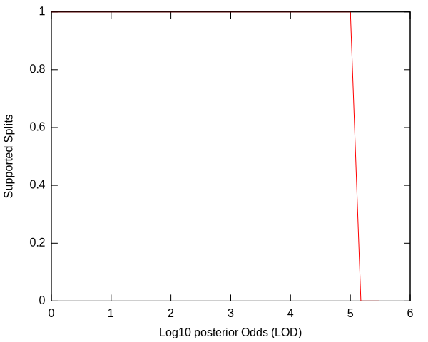
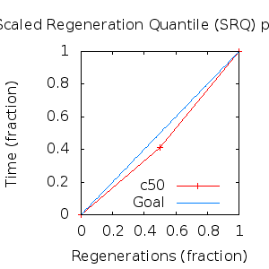
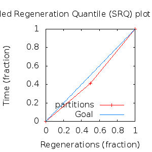

MCMC Post-hoc Analysis: 4 sequences
Data & Model
| Partition | Sequences | Lengths | Alphabet | Substitution Model | Indel Model | Scale Model |
|---|
| 1 |
E5_epsilonzeta_aa_reduced.fas |
86 - 93 |
Amino-Acids | S1 = lg08+f |
I1 = rs07 |
scale1 ~ gamma[0.5,2] |
Scalar variables
| Statistic | Median | 95% BCI | ACT | ESS | burnin | PSRF-CI80% | PSRF-RCF |
|---|
| prior |
-65.4 |
(-79.01, -54.35) |
34.63 |
7797 |
607
|
0.9996 | 1.004
|
| prior_A1 |
-40.7 |
(-50.58, -37.9) |
1.345 |
200735 |
93
|
1 | 0.9992
|
| likelihood |
-574.3 |
(-582.9, -566.5) |
5.685 |
47496 |
156
|
1 | 1
|
| posterior |
-640.1 |
(-654.4, -627.3) |
33.76 |
7998 |
697
|
1 | 1.002
|
| Heat.beta |
1 |
| | | | | |
| Scale[1] |
1.056 |
(0.2439, 2.938) |
1.044 |
258712 |
66
|
1 | 0.9993
|
| f:pi[A] |
0.05113 |
(0.02227, 0.08456) |
8.213 |
32875 |
472
|
1 | 0.9982
|
| f:pi[R] |
0.08675 |
(0.04712, 0.1326) |
7.687 |
35123 |
331
|
1.001 | 1.001
|
| f:pi[N] |
0.01567 |
(0.001963, 0.03745) |
9.697 |
27844 |
497
|
0.9993 | 0.9943
|
| f:pi[D] |
0.005045 |
(1.518e-07, 0.02164) |
13.04 |
20705 |
433
|
1 | 1.001
|
| f:pi[C] |
0.0453 |
(0.01821, 0.07817) |
7.693 |
35096 |
299
|
0.9999 | 1.001
|
| f:pi[Q] |
0.04217 |
(0.01669, 0.07338) |
7.882 |
34255 |
317
|
0.9999 | 1.001
|
| f:pi[E] |
0.01096 |
(0.0003172, 0.03079) |
10.04 |
26890 |
479
|
0.9997 | 0.9943
|
| f:pi[G] |
0.02665 |
(0.005597, 0.05714) |
8.775 |
30770 |
448
|
1 | 0.9993
|
| f:pi[H] |
0.04159 |
(0.0169, 0.07346) |
8.275 |
32628 |
421
|
0.9999 | 1.004
|
| f:pi[I] |
0.03428 |
(0.01344, 0.05974) |
8.084 |
33400 |
389
|
0.9998 | 1.005
|
| f:pi[L] |
0.2041 |
(0.1486, 0.2634) |
6.745 |
40031 |
259
|
1 | 0.9941
|
| f:pi[K] |
0.03422 |
(0.01249, 0.06262) |
8.083 |
33403 |
565
|
0.9999 | 0.9936
|
| f:pi[M] |
0.02381 |
(0.00712, 0.04599) |
9.179 |
29414 |
368
|
1 | 0.9983
|
| f:pi[F] |
0.09049 |
(0.0527, 0.1342) |
7.477 |
36109 |
395
|
1 | 0.9983
|
| f:pi[P] |
0.047 |
(0.01714, 0.08476) |
8.087 |
33386 |
415
|
1 | 1
|
| f:pi[S] |
0.03603 |
(0.01289, 0.0652) |
8.258 |
32696 |
427
|
0.9995 | 1.005
|
| f:pi[T] |
0.0338 |
(0.01154, 0.06109) |
7.83 |
34484 |
612
|
0.9995 | 1.003
|
| f:pi[W] |
0.02181 |
(0.004426, 0.04734) |
9.298 |
29039 |
270
|
1 | 1.002
|
| f:pi[Y] |
0.01653 |
(0.003386, 0.03568) |
8.803 |
30672 |
423
|
0.9997 | 1.001
|
| f:pi[V] |
0.09947 |
(0.06019, 0.1427) |
7.418 |
36396 |
691
|
1 | 1.003
|
| rs07:mean_length |
2.251 |
(1.183, 4.438) |
2.379 |
113509 |
105
|
1 | 1
|
| rs07:log_rate |
-3.72 |
(-4.487, -2.845) |
1.304 |
206996 |
116
|
0.9999 | 1.001
|
| |A1| |
94 |
(93, 97) |
3.527 |
76543 |
93 |
0.75 | 0.9987
|
| #indels1 |
5 |
(5, 7) |
1.265 |
213374 |
38 |
0 | 0.9992
|
| |indels1| |
11 |
(10, 16) |
2.206 |
122402 |
61 |
0.75 | 0.9984
|
| #substs1 |
70 |
(67, 71) |
2.534 |
106531 |
99 |
0.6667 | 0.9992
|
| Scale1*|T| |
0.9852 |
(0.744, 1.253) |
1.908 |
141539 |
104
|
1 | 0.9998
|
| |A| |
94 |
(93, 97) |
3.527 |
76543 |
93 |
0.75 | 0.9987
|
| #indels |
5 |
(5, 7) |
1.265 |
213374 |
38 |
0 | 0.9992
|
| |indels| |
11 |
(10, 16) |
2.206 |
122402 |
61 |
0.75 | 0.9984
|
| #substs |
70 |
(67, 71) |
2.534 |
106531 |
99 |
0.6667 | 0.9992
|
| |T| |
0.9343 |
(0.1811, 2.232) |
1.002 |
269458 |
124
|
0.9999 | 0.9994
|
Phylogeny Distribution


Alignment Distribution
Partition 1
|
|
|
Diff |
|
Min. %identity |
# Sites |
Constant |
Informative |
| Initial |
FASTA |
HTML |
Diff |
|
34.4% |
93 |
24 (25.8%) |
8 (8.6%) |
| Best (WPD) |
FASTA |
HTML |
|
AU |
55.3% |
94 |
40 (42.6%) |
8 (8.51%) |
Mixing
Statistics: | scalar burnin | 697 | | scalar ESS | 7797 | | topological ESS | | | ASDSF | NA | | MSDSF | NA | | PSRF CI80% | 1.001 | | PSRF RCF | 1.005 |
|  |
Analysis
directory: /work/awillemsen/bali-phy/AlphaPVs_E5_aa_new_reduced
version: 3.3
| chain # | burnin | subsample | Iterations (after burnin) | command line | subdirectory |
|---|
| 1 |
10000 |
1 |
90000 |
bali-phy E5_epsilonzeta_aa_reduced.fas -s 43423 --smodel lg08 -i 100000 -n AlphaPVs_E5_red_epsilonzeta |
AlphaPVs_E5_red_epsilonzeta-1 |
| 2 |
10000 |
1 |
90000 |
bali-phy E5_epsilonzeta_aa_reduced.fas -s 32635 --smodel lg08 -i 100000 -n AlphaPVs_E5_red_epsilonzeta |
AlphaPVs_E5_red_epsilonzeta-2 |
| 3 |
10000 |
1 |
90000 |
bali-phy E5_epsilonzeta_aa_reduced.fas -s 42369 --smodel lg08 -i 100000 -n AlphaPVs_E5_red_epsilonzeta |
AlphaPVs_E5_red_epsilonzeta-3 |
| P(data|M) = -581.436 +- 0.084
|
Complete sample: 2
topologies |
95% Bayesian credible interval: 1 topologies |
Model and priors
Tree (+priors)
| topology | ~ uniform on tree topologies |
| branch lengths | ~ iid[num_branches[T],gamma[0.5,div[2,num_branches[T]]]] |
Substitution model (+priors)
| S1 | = |
lg08+f
| f:pi | ~ | dirichlet_on[letters[@a],1]
|
|
Indel model (+priors)
| I1 | = |
rs07
| rs07:log_rate | ~ | laplace[-4,0.707]
|
| rs07:mean_length | ~ | exponential[10,1]
|
|
Scales (+priors)
{kind=link}
{kind=link}
{kind=link}
{kind=link}
{kind=link}
{kind=link}
{kind=link}
{kind=link}